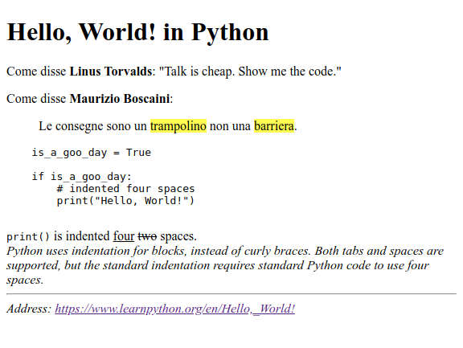
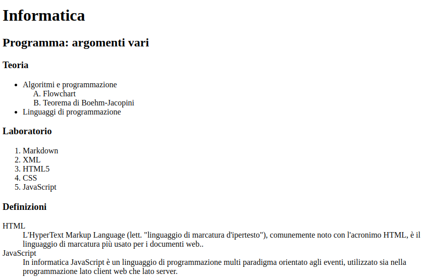
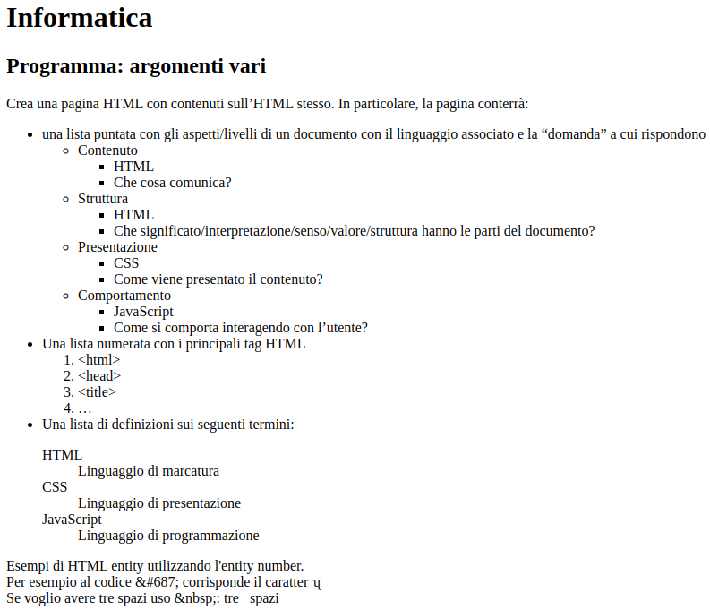
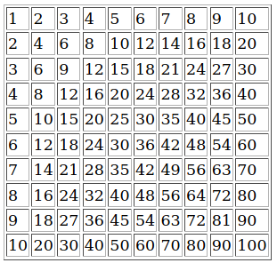
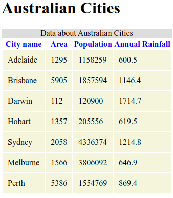
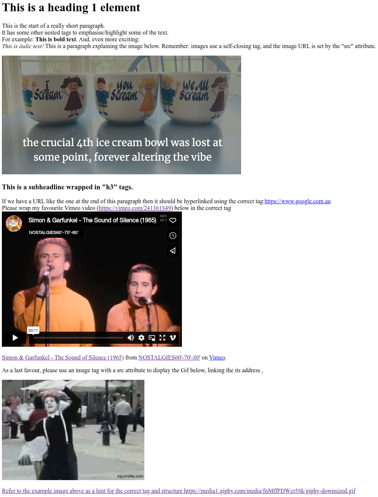
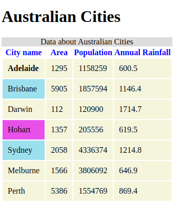
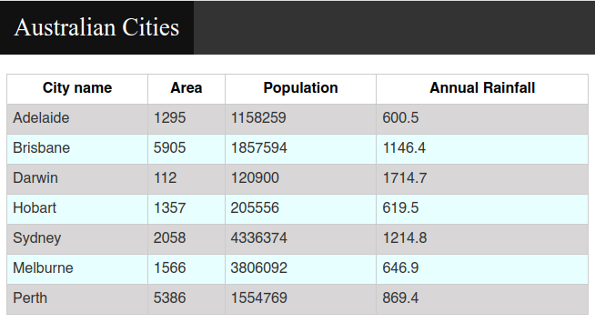
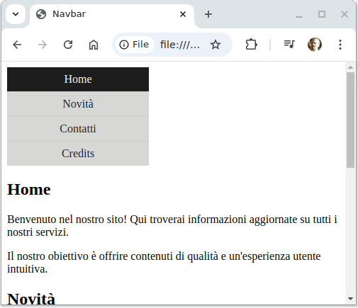

Appunti di laboratorio - elenco completo Contatto maurizio.boscaini@unitn.it
NOTA: questi appunti sono da intendersi solo come aiuto allo studio e alla preparazione all'esame.
La programmazione è difficile...ma è anche bella, utile e importante.
Si può imparare a programmare solo programmando.
Riferimento
Argomenti svolti nella Lezione
Elementi HTML da applicare (oltre a quelli già visti in esercizi precedenti):
mark, pre, q, blockquote, cite, address, del, ins
Crea la pagina HTML hello_world.py.html come quella riportata di seguito.

https://nomeserver.dominio/path/resource-namealtIl tag
Elementi HTML da applicare (oltre a quelli già visti in esercizi precedenti):
ul, ol, li, dl, dt, dd
Crea la pagina HTML informatica_programma1.html come quella riportata di seguito.

Esercizio per casa
Elementi HTML da applicare (oltre a quelli già visti in esercizi precedenti):
ul, ol, li, dl, dt, dd
Crea la pagina HTML informatica_programma2.html come quella riportata di seguito.

Elementi HTML da applicare (oltre a quelli già visti in esercizi precedenti):
table, tr, td
Esercizio per casa
Crea la pagina HTML tabellina_pitagorica.html come quella riportata di seguito.

Elementi HTML da applicare (oltre a quelli già visti in esercizi precedenti):
table, thead, tbody, tr, td, th, caption
Esercizio per casa
Crea la pagina HTML tabular_data1.html come quella riportata di seguito.

Elementi HTML da applicare (oltre a quelli già visti in esercizi precedenti):
iframe
Esercizio per casa
Crea la pagina HTML tabular_data1.html come quella riportata di seguito.
/tabular_data1
├── tabular_data1.html
├── /images
│ ├── tea_cups.png

I documenti/pagine di stile CSS consentono di specificare l'aspetto presentazionale degli elementi di una pagina web. Un file CSS si compone di regole con la seguente sintassi:
selettore/i {
proprità1:valore1;
proprità2:valore2;
...
}
I selettori possono riferirsi a:
h1 {...})id: si usa il # e il valore dell'attributo id dell'elemento che si seleziona, per es.:<p id='autore'>...<p>
#autore {...}
class: si usa il . e il valore dell'attributo class degli elementi che si selezionano, per es.:<p class='importante'>...<p>
...
<h1 class='importante'>...<h1>
.importante {...}
Le regole di stile possono essere scritte:
style dei tag<style> nella pagina HTML<link rel="stylesheet" type="text/css" href="css/styles.css" />
Esempio di pagina HTML "stilizzata" in mille modi con i fogli di stile CSS CSS Zen Garden
Elementi HTML da applicare (oltre a quelli già visti in esercizi precedenti):
table, tr, td, th, caption
Crea la pagina HTML tabular_data2.html come quella riportata di seguito.

Elementi HTML da applicare (oltre a quelli già visti in esercizi precedenti):
table, tr, td, th, caption
Esercizio per casa
Crea la pagina HTML tabular_data3.html come quella riportata di seguito.
/tabular_data3
├── tabular_data3.html
├── /css
│ ├── styles.css

Elementi HTML da applicare (oltre a quelli già visti in esercizi precedenti):
a (come ancora di arrivo), section
Esercizio per casa
Crea la pagina HTML navbar1.html e il file CSS css/styles.css come quella riportata di seguito che presenta una barra di navigazione verticale che cambi i colori di sfondo e testo al passaggio del mouse.
/navbar1
├── navbar1.html
├── /css
│ ├── styles.css
